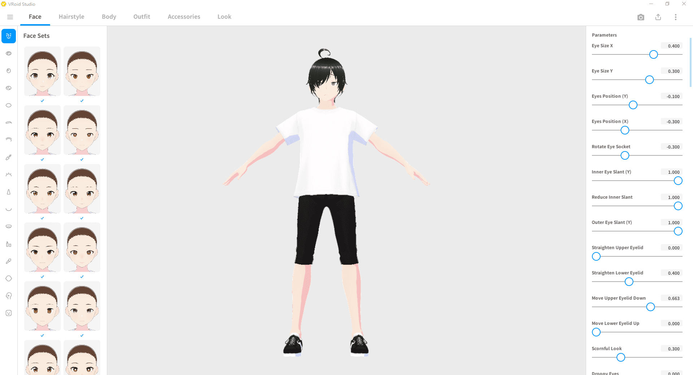
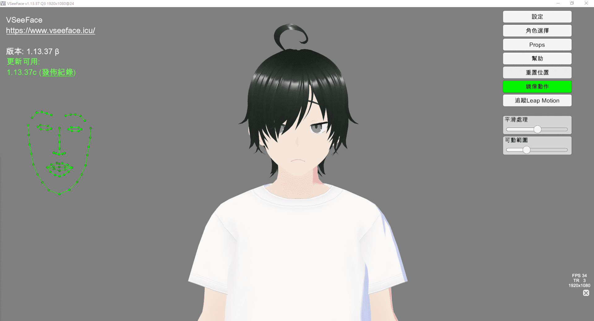
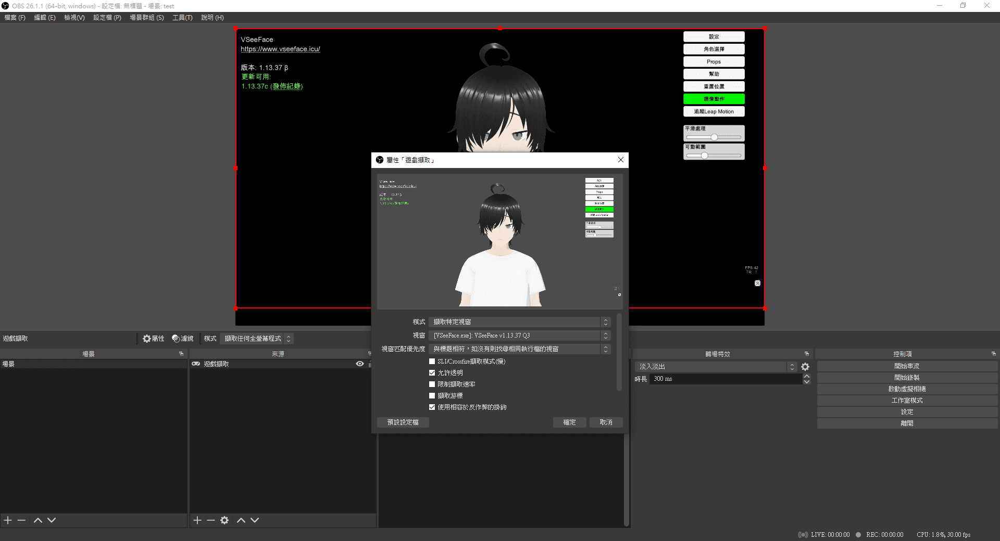

VTuber 是 Virtual YouTuber 的縮寫
就是虛擬形象結合真人的 YouTuber
透過捕捉真人的動作，讓虛擬人物有生動的表情與動作
其實現在的技術門檻降低很多了
網路上也有很多教學
本篇主要是講 3D VTuber
(因為我還沒研究到 2D 啊 @@)
概述
我把它拆成三塊
- 3D 模型
- 動作捕捉
- 直播串流
3D 模型
我不會建模
什麼 Unity, Blender, MMD 也沒聽過
沒關係～
你可以用這個 VRoid Studio 免費輕鬆建模！
直接生成一個基本人物，然後去微調它裡面的設定

五官、四肢、髮型、服裝都有很多預設可選擇
也能用滑鼠直接拉數值來調整
顏色 (Texture) 可以在裡面直接畫
或是在 Photoshop 畫完匯進去也可以喔
骨架 (Bones) 目前只有頭髮有支援
如果要更細緻就要找其他建模軟體了
但學習門檻會很高
解釋一下骨架要幹麻？
如果頭髮沒有骨架
當你轉頭的時候，頭髮就死板板的跟著轉
如果有骨架
頭髮就會隨著頭動的方向而擺動，比較像現實世界
然後還有衣服
除了可以使用內建的衣服，來改顏色與增減布料
也可以到 BOOTH 購買人家做好的成衣
最後完成了之後，你需要存兩種檔案
.vroid(之後還能在 VRoid Studio 繼續編輯).vrm(模型完成檔)
補充: VRoid Studio 可商用條款
動作捕捉
這裡分成硬體和軟體
最簡單的硬體就是 Webcam
也是你在家遠距上班用的視訊鏡頭
軟體使用 VSeeFace 免費的動捕軟體
首先匯入你在 VRoid Studio 完成的 .vrm 檔
然後插上 Webcam 攝影機
神奇的事就發生了~
你做什麼表情，模型就跟你做一樣的表情
注意: 這裡僅有臉部捕捉，若要手部或身體捕捉，就要有另外的設備

VSeeFace 也是有很多可以微調的地方
自動眨眼、捕捉靈敏度、熱鍵切換表情等等
網路上有很多教學影片可以看
若有問題也可以使用推特聯絡開發者
補充: VSeeFace 可商用條款
上面講的是臉部捕捉，那全身捕捉呢？
大概分為兩種，光學式和穿戴式
-
光學式
要有一個攝影棚，架設很多攝影機
人身上穿很多點點的衣服 (電影幕後花絮常看到)
攝影機去捕捉點點的軌跡來記錄動作
這種一般人負擔不起的 -
穿戴式
把好幾個感應器穿在身上各個部位
類似手機陀螺儀，可以偵測到你在移動
藉由無線網路回傳給接受器
有名的品牌有: Xsens, Rokoko, Neuron
不過呢～
如果只是一般直播，臉部捕捉就夠了
除非是什麼演唱會之類的
(補充!!!)
後來我發現一個超厲害的軟體
可以透過 Webcam 來做到全身捕捉
就是 ThreeDPoseTracker
不過我電腦效能不夠，看來要升級 GPU 惹 QQ
直播串流
免費直播軟體的霸主肯定是 OBS 沒錯
開放原始碼，而且擁有廣大的社群
有問題都可以到官方論壇搜尋看看喔
也有很多外掛可以下載
你可以使用遊戲擷取 (Game Capture)來把 VSeeFace 擷取進畫面裡
然後把上下左右裁剪掉，就不會露出功能介面

補充: OBS 可商用條款
其他
麥克風
美美的皮，配上破破的聲音
肯定無法忍受啊
如果你環境很吵，又用電容式麥克風
那空調聲、滑鼠聲、媽媽叫吃飯都會收進去
如果用動圈式麥克風，因為比較不敏感
就不會什麼都收進去，但嘴巴要很靠近麥講話
如果你只有一個人的話，買 USB 麥克風即可
不要買 XLR 搞死自己，因為它還要接錄音介面
聊天室
很多 V 都會把觀眾留言放在畫面上
那要怎麼用呢？
首先去直播聊天室按 ... > 在彈出式視窗中開啟聊天室
把網址複製到 OBS 的瀏覽器來源 (Browser Source)
你會發現…背景怎麼有顏色，但別人的都是透明的啊
如果你剛好懂怎麼寫網頁，那就可以自己改 CSS
如果不懂就可以去 Chat v2.0 Style Generator 網站
修改自己想要的顏色與字型等
最後把下面的 CSS 複製到 OBS 中
配樂
一個人講話肯定很乾，這時來點配樂也是不錯的
但是要注意版權！建議使用 YouTube 的免費音樂庫
可以透過篩選找出不同的情境跟氛圍
每首歌有自己的授權類型，有些會需要註明出處喔
結語
最後啊～
雖然這些軟體都是免費的
但你可能會發現自己的電腦跑不動
而且如果要直播，網路也要穩定才行
就要開始砸更多錢錢囉
另外有看過一個名言
皮讓人停下來，魂讓人留下來
如果皮很美，但講話/企劃內容很無聊
那也是無法留住人的
哎呀離題啦
總之經營 VTuber 是有很多眉角的
可不是只有技術方面要處理喔